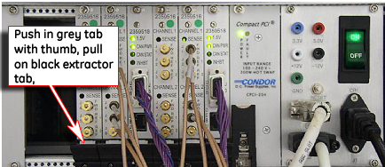
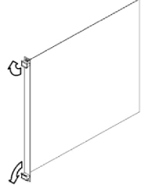
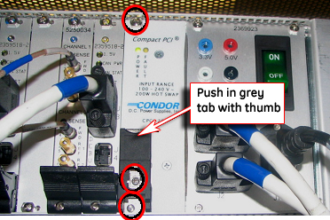

Operating Documentation
Direction 5440000, Rev# 5
Signa HDxt Service Methods
Module Version 3.0, Version Date 3/23/09
Operating Documentation |
| Required Persons | Preliminary Reqs | Procedure | Finalization |
|---|---|---|---|
| 1 | Not Applicable | 1 hour | 30 mins |
This procedure describes how to replace the various board components of the ASC/UPM Chassis.
| Item | Qty | Effectivity | Part# | Manufacturer | |
|---|---|---|---|---|---|
| ESD Wrist Strap | 1 | - | - | - | |
| Screwdriver | 1 | - | - | - | |
| ||||
| Electrocution Hazard! | ||||
| Dangerous and or fatal voltages are present in the energized cabinet. | ||||
| Preform OSHA Lockout Tagout Requirements. DISABLE AND VERIFY SAFE VOLTAGE LEVELS. |
| ||||
| Prior to removing power from the Systems Cabinet, verify that ICNs are properly shut down. See ICN ON/OFF Procedure. | ||||
Ensure power was removed from the Systems Cabinet as described in Lockout Tagout for RF Amp/Systems Cabinet/Pen Panel.
Refer to Illustration 1, andTable 1 for circuit board parts identification.
Illustration 1: ASC Chassis - Front View

| NOTE: | A new detector board that can be used in any 1.5T system,
P/N 5250154, will be released in 2007. The new board does not have
the SMB inputs for Reflected Power, as they are not used for 1.5T.
The new board can replace the original detector board, P/N 5250034.
|
Table 1: Circuit Board Parts Identification
| Slot Number | Board Name |
| 18 | Input Panel |
| 16 & 17 | Power Supply |
| 15 | UPM 1 Processor Board |
| 14 | UPM 1 NB RF Detector Board |
| 13 | UPM 1 BB RF Detector Board |
| 12 | UPM 2 Processor Board |
| 11 | UPM 2 NB RF Detector Board |
| 10 | UPM 2 BB RF Detector Board |
| 8 & 9 | NB Amp Interface Board |
| 6 & 7 | Opt. BB Amp Interface Board |
To remove/replace a circuit board:
Attach a grounding wrist strap.
Where applicable, remove the cables (Sub D, SMB, etc.) from the face of the board.
Loosen the two faceplate holding screws. (These screws are captive to the faceplate, and do not need to be completely removed.)
Using your thumbs, push in the gray release tab shown in Illustration 2, and gently pull the extractor tab located on the bottom of the circuit board. (Refer toIllustration 3 for the proper direction. The lever action of the ejectors will disengage the circuit board connections from the chassis.)
Illustration 2: Faceplate Release Tabs

Illustration 3: Faceplate Ejector Action

| ||||
| When replacing the board, the 50-ohm terminators must be taken from the old board and placed on the new board. | ||||
Slide the circuit board all the way out of the card cage, being careful not to bend or bind the card in any way. (The circuit board should be handled using only the faceplate, ejectors, and the edges of the board.)
Place the card in an appropriate shipping package or discard, if applicable.
Reverse the process for circuit board installation:
Remove the packing material from the replacement board, and gently slide the circuit board along the slot guides into the chassis.
Gently engage the circuit board connectors with the backplane. If it the circuit board does not seem to be properly engaging the backplane, remove the board and check the connectors for bent or broken pins.
Once the board ejectors contact the ASC chassis faceplate, gently push the ejectors into the center of the board. This action will cause the ejectors to insert the board into the chassis.
| NOTE: | Do not attempt to use anything other than the ejectors to insert or remove the board from the chassis. |
Tighten the screws in the faceplate to secure the circuit board to the card rack. (Do not overtighten these screws.)
Where applicable, reattach the cables to the face of the board.
Refer to Step for the steps required to restore power to the Systems Cabinet.
Refer to Finalization for checkout and proper operation.
Ensure power was removed from the Systems Cabinet as described in Lockout Tagout for RF Amp/Systems Cabinet/Pen Panel.
To remove/replace the Power Supply Module:
Attach a grounding wrist strap.
Loosen the three faceplate holding screws, circled in Illustration 4. (These screws are captive to the faceplate, and do not need to be completely removed.)
Illustration 4: Power Supply Faceplate Holding Screws

Using your thumbs, push in and gently pull the extractor tab located on the bottom of the circuit board. The lever action of the ejectors will disengage the power supply module connections from the chassis. (Illustration 3 demonstrates the proper direction).
Slide the module all the way out of the card cage. (The module should be handled using only the faceplate, ejectors, and the edges of the module.)
Place the module in an appropriate shipping package.
Reverse the process for Power Supply Module installation:
Remove the packing material from the replacement module, and gently slide the module into the chassis.
Use the ejectors to insert the board into the chassis.
Tighten the screws holding the faceplate to secure the power supply module to the card rack. (Do not overtighten these screws.
Refer to Step for the steps required to restore power to the Systems Cabinet.
Ensure power is removed from the Systems Cabinet as described in Lockout Tagout for RF Amp/Systems Cabinet/Pen Panel.
To remove/replace the ASC/UPM Chassis:
Attach a grounding wrist strap.
Remove all the boards and store them in a static-safe location. (See Circuit Board Removal/Replacement, Circuit Board Removal/Replacement, Step 2 for removal instructions.)
Remove the Power Supply Module. (SeePower Supply Module Removal/Replacement for removal instructions.)
Remove the four screws that hold the ASC Chassis to the cabinet frame.
Slide the ASC Chassis out of the Systems Cabinet.
Reverse the process for ASC/UPM Chassis installation:
Attach a grounding wrist strap.
Slide the ASC Chassis into the Systems Cabinet.
Install the four screws that hold the ASC Chassis to the cabinet frame.
Reinstall all the boards. (See Circuit Board Removal/Replacement, Circuit Board Removal/Replacement, Step 2 for installation instructions.)
Replace the power supply module. (See Power Supply Module Removal/Replacement, Power Supply Module Removal/Replacement for installation instructions.
Before reapplying power to the Systems Cabinet, verify the following conditions exist:
All circuit boards are seated properly into the backplane, and the faceplate screws are tightened.
All cable connections are in place and secured properly.
All covers and panels are properly secured, and no loose hardware is resting on any of the surfaces.
Refer to LOTO process to reapply power.
Reset TPS to ensure the system will download.
If a NB RF Detector Board or a NB Amp Interface Board was replaced, run the Universal Power Monitor - Head Setup and Calibration and UPM - Body Setup and Calibration.
If a BB RF Detector Board or a BB Amp Interface Board was replaced, run the UPM - MNS Setup and Calibration.
Run UPM Diagnostics to ensure proper functionality. (See UPM I/O Diagnostics.
Run one head or body scan to ensure proper operation.